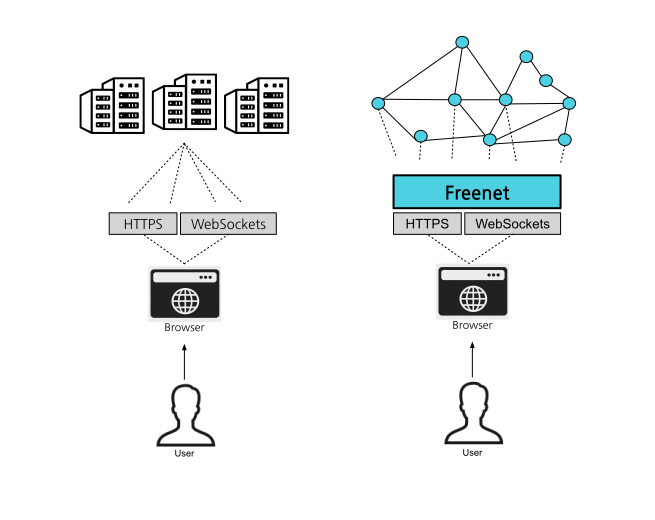
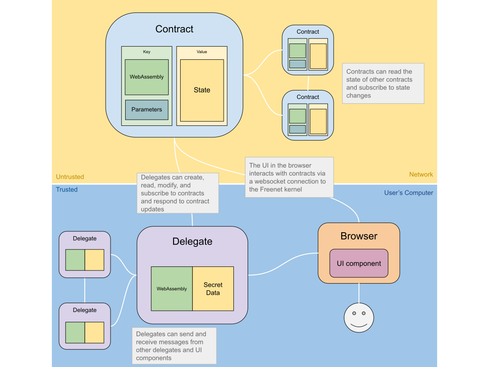
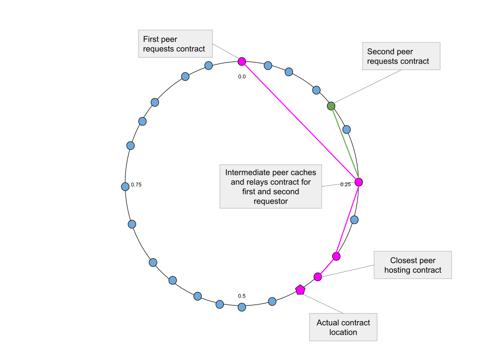

Introduction
Freenet is a distributed, decentralized alternative to the centralized World Wide Web, designed to unleash a new era of innovation and competition, while protecting freedom of speech and privacy.
The heart of Freenet is the Core, which runs on users' computer, smartphone, or other devices. The Core is tiny, less than 5 MB, allowing it to be installed in a matter of seconds and is compatible with a wide range of hardware.

Freenet is a peer-to-peer network, which means that computers that are part of the network self-organize into a global network without any central authority, and the work of hosting services is distributed among the users.
Components of Decentralized Software
Delegates, contracts, and user interfaces (UIs) each serve distinct roles in the Freenet ecosystem. Contracts control public data, or "shared state". Delegates act as the user's agent and can store private data on the user's behalf, while User Interfaces provide an interface between these and the user through a web browser. UIs are distributed through the P2P network via contracts.

Freenet Core
The Freenet Core is the software that enables a user's computer to connect to the Freenet network. Its primary functions are:
- Providing a user-friendly interface to access Freenet via a web browser
- Host the user's delegates and the private data they store
- Host contracts and their associated data on behalf of the network
- Manage communication between contracts, delegates, and UI components
Built with Rust, the core is designed to be compact (ideally under 5 MB), efficient, and capable of running on a variety of devices such as smartphones, desktop computers, and embedded devices.
Contracts
Freenet is essentially a global decentralized key-value store where keys are WebAssembly code called Contracts. Contracts are stored in the network, along with their data or "state". The contract controls what state is permitted and how it can be modified, and also how to efficiently synchronize state between peers.
A contract's state is just a block of bytes, and can be anything from a simple number to a complex data structure. The contract's code defines the state's formatting. Even the serialization format is up to the contract, so it can be anything from JSON to Bincode, or a custom binary format.
Network users can read a contract's state and subscribe to receive immediate updates if the state is modified.
Contracts play a similar role in Freenet to databases and real-time publish-subscribe mechanisms in traditional online services, while being entirely decentralized, secure, and scalable.
Contract Operation
State synchronization and merging
Fundamental Concepts
Contracts need to provide a mechanism to merge any two valid states, creating a new state that integrates both. This process ensures the eventual consistency of contract states in Freenet, a concept similar to Conflict-free Replicated Data Types.
As a very simple example, if the contract's state is a single number, then the contract could define the merging of two states as the maximum of the two numbers.
In mathematical terms, a contract defines a commutative monoid on the contract's state - but you can ignore this if you're not a mathematician.
Efficient State Synchronization
Naively we could transfer the entire state between peers, but this would be inefficient for larger states. Instead, Freenet transmits only the difference between states.
To do this a contract implements three functions:
-
summarize_state- Returns a concise summary of the contract's state. -
get_state_delta- Compares the contract's state against the summary of another state and returns the difference between the two, the "delta". -
update_state- Applies a delta to the contract's state, updating it to bring it in sync with the other peer's contract state.
Contracts can implement these functions however they wish depending on the type of data their state contains.
Step-by-step
PeerA and PeerB need to synchronize their states. The algorithm for efficient state synchronization consists of the following steps:
-
Summarize State by Initiator: PeerA compiles a concise summary of its current state using the
summarize_statefunction.- This summary is transmitted to PeerB
-
Compare State at Receiver: PeerB uses
get_state_deltato compare the summary against its own state.- If they are different, proceed to the next step; if not, synchronization is complete.
-
Send Delta: If the states are different, PeerB calculates the delta and sends it to PeerA.
-
Apply Delta: PeerA applies this received delta to its state using
update_state. -
Reverse Synchronization: This process is repeated in the opposite direction.
This approach allows peers to synchronize state over the network while minimizing data transfer.
Blog Use Case
Consider a public blog contract. The state of this contract would be the blog's content, including blog posts. The contract's code requires that new posts can only be added if they are signed by the blog's owner. The owner's public key is part of the contract's parameters.
The contract would summarize its state by returning a list of post identifiers, and the state delta would be a list of new posts. The contract would apply the delta by appending the new posts to its list of posts. The contract may have a limit on the number of posts it can store, in which case it would remove old posts to make room for new ones.
Writing a Contract in Rust
Freenet Contracts can be written in any programming language that compiles to WebAssembly, but as Freenet is written in Rust it is currently the best supported language for writing contracts.
The ContractInterface Trait
Rust contracts implement the ContractInterface trait, which defines the
functions that the core calls to interact with the contract. This trait is
defined in the
freenet-stdlib.
/// # ContractInterface
///
/// This trait defines the core functionality for managing and updating a contract's state.
/// Implementations must ensure that state delta updates are *commutative*. In other words,
/// when applying multiple delta updates to a state, the order in which these updates are
/// applied should not affect the final state. Once all deltas are applied, the resulting
/// state should be the same, regardless of the order in which the deltas were applied.
///
/// Noncompliant behavior, such as failing to obey the commutativity rule, may result
/// in the contract being deprioritized or removed from the p2p network.
pub trait ContractInterface {
/// Verify that the state is valid, given the parameters.
fn validate_state(
parameters: Parameters<'static>,
state: State<'static>,
related: RelatedContracts<'static>,
) -> Result<ValidateResult, ContractError>;
/// Update the state to account for the new data
fn update_state(
parameters: Parameters<'static>,
state: State<'static>,
data: Vec<UpdateData<'static>>,
) -> Result<UpdateModification<'static>, ContractError>;
/// Generate a concise summary of a state that can be used to create deltas
/// relative to this state.
fn summarize_state(
parameters: Parameters<'static>,
state: State<'static>,
) -> Result<StateSummary<'static>, ContractError>;
/// Generate a state delta using a summary from the current state.
/// This along with [`Self::summarize_state`] allows flexible and efficient
/// state synchronization between peers.
fn get_state_delta(
parameters: Parameters<'static>,
state: State<'static>,
summary: StateSummary<'static>,
) -> Result<StateDelta<'static>, ContractError>;
}Flexibility versus Convenience
The ContractInterface trait is a low-level "Layer 0" API that provides direct
access to the contract's state and parameters. This API is useful for contracts
that require fine-grained control over their state, but can be cumbersome.
Soon we will provide higher-level APIs on top of Layer 0 that will sacrifice some flexibility for ease of contract implementation.
Delegates
In Freenet, Delegates are software components that can act on the user's behalf. Think of them as a more sophisticated version of a web browser's local storage, with similarities to Unix "Daemons". Operating within the Freenet core on your device, Delegates are a secure and flexible mechanism for managing private data, such as cryptographic keys, tokens, and passwords, and executing complex tasks.
Delegates interact with various components within Freenet, including Contracts, User Interfaces, and other Delegates. They can also communicate directly with the user, such as to request user permissions or notify the user of events.
Implemented in WebAssembly and adhering to the DelegateInterface trait, Delegates seamlessly integrate within the Freenet network, operating securely on your devices.
Actor Model and Message Passing
Delegates communicate with Contracts, other Delegates, and UIs by passing messages, similar to the actor model.
The Freenet Core makes sure that for any incoming message, whether it's from another Delegate, a User Interface, or a Contract update, the receiver knows who the sender is. This allows delegates to verify the behavior of any component they interact with, and decide if they can be trusted.
Delegate Use Cases
Delegates have a wide variety of uses:
-
A key manager delegate manages a user's private keys. Other components can request that this Delegate sign messages or other data on their behalf.
-
An inbox delegate maintains an inbox of messages sent to the user in an email-like system. It retrieves messages from an inbox Contract, decrypts them, and stores them locally where they can be accessed by other components like a user interface.
-
A contacts delegate manages a user's contacts. It can store and retrieve contact information, and can be used by other components to send messages to contacts.
-
An alerts delegate watches for events on the network, such as a mention of the user's name in a discussion, and notifies the user of these events via an alert.
Moreover, Delegates can securely synchronize with identical Delegate instances running on other devices controlled by the user, such as a laptop, phone, or desktop PC. This synchronization, facilitated through a shared secret private key provided by the user, allows the Delegates to communicate securely, acting as both backups and replicas of each other through Freenet's peer-to-peer network.
Similarity to Service Workers
Delegates have much in common with Service Workers in the web browser ecosystem. Both are self-contained software modules, running independently of the user interface and performing complex tasks on behalf of the user.
However, Delegates are even more powerful. While Service Workers can store data and interact with components within the scope of the web browser and its pages, Delegates can talk to other Delegates in the same device, or with other Delegates running elsewhere via Freenet's peer-to-peer network.
User Interface
On the normal web, a user might visit https://gmail.com/, their browser
will download the Gmail user interface which then runs in their browser and connects back to the Gmail servers.
On Freenet the user interface is downloaded from a Freenet contract, and it interacts with contracts and delegates by sending messages through the Freenet core.

These UIs are built using web technologies such as HTML, CSS, and JavaScript, and are distributed over Freenet and run in a web browser. UIs can create, retrieve, and update contracts through a WebSocket connection to the local Freenet peer, as well as communicate with delegates.
Because UIs run in a web browser, they can be built using any web framework, such as React, Angular, Vue.js, Bootstrap, and so on.
Freenet Network Topology
Small-World Network
Freenet is structured as a decentralized peer-to-peer network, based on the idea of a small-world network. This network topology is scalable and efficient, allowing contract state to be found quickly and without any reliance on a central authority.

Freenet Peers
In Freenet, a "peer" is any computer running the Freenet Core software. The peers are organized in a ring-like structure, with each peer assigned a specific numerical value between 0.0 and 1.0, indicating its location in the network's topology. This location is derived from the peer's IP address.
Establishing Neighbor Connections
Every Freenet peer, also referred to as a node, forms two-way connections with a set of other peers, termed "neighbors." These connections utilize the User Datagram Protocol (UDP) and can do Frewall hole punching when necessary. Peers manage their resource usage — bandwidth, memory, CPU, and storage — based on limits set by the user.
Adaptive behavior
Peers keep track of their neighbor's performance and learn to prefer faster connections over time.
Peers can also identify bad behavior by other peers like excess resource usage and will disconnect from them.
Intelligent Routing
Freenet's request routing mechanism plays a crucial role in the efficiency of the network.
It is responsible for deciding which peer to route a request to when attempting to read, create, or modify a contract's state. The mechanism is designed to select the peer that can complete the request the fastest, which may not always be the peer closest to the contract's location - the traditional approach for routing in a small-world network, known as greedy routing.
Isotonic Regression
Freenet uses isotonic regression, a method for estimating a monotonically increasing or decreasing function given a set of data, to predict the response time from a peer based on its ring distance from the target location of the request.
This estimation is then adjusted by the average difference between the isotonic regression estimate and the actual response time from previous interactions with the peer. This process enables a form of adaptive routing that selects the peer with the lowest estimated response time.
Router Initialization and Event Handling
When a new Router is created, it's initialized with a history of routing events. These events are processed to generate the initial state of the isotonic estimators. For example, failure outcomes and success durations are computed for each event in the history and used to initialize the respective estimators. The average transfer size is also computed from the history.
The Router can add new events to its history, updating its estimators in the process. When a successful routing event occurs, the Router updates its response start time estimator, failure estimator, and transfer rate estimator based on the details of the event. If a failure occurs, only the failure estimator is updated.
Peer Selection
To select a peer for routing a request, the Router first checks whether it has sufficient historical data. If not, it selects the peer with the minimum distance to the contract location. If it does have sufficient data, it predicts the outcome of routing the request to each available peer and selects the one with the best predicted outcome.
Outcome Prediction
To predict the outcome of routing a request to a specific peer, the Router uses its isotonic estimators to predict the time to the start of the response, the chance of failure, and the transfer rate. These predictions are used to compute an expected total time for the request, with the cost of a failure being assumed as a multiple of the cost of success. The peer with the lowest expected total time is selected for routing the request.
Freenet Transport Protocol (FrTP)
Note: This document is a work in progress and is subject to change, it is currently out-of-sync with the codebase and should be updated to reflect the current state of the codebase once it has stabilized.
Introduction
The Freenet Transport Protocol (FrTP) is a UDP-based system designed to ensure reliable and encrypted message transmission. This document outlines the key elements of FrTP, including connection establishment, message handling, and rate limiting.
Overview
- Firewall Traversal: FrTP allows peers behind firewalls to establish direct connections.
- Security: All messages are encrypted using AES128GCM, with RSA public key exchange for connection establishment, should effectively thwart man-in-the-middle attacks.
- Streaming: Large messages can be streamed, meaning that a peer can start forwarding data before the entire message is received.
- Covert: FrTP can run on any UDP port and FrTP packets look like random data, although more sophisticated analysis of packet timing and size could be used to identify FrTP traffic. FrTP can't be port-scanned as it won't respond to packets unless encrypted with the peer's public key.
- Efficient: FrTP is designed to minimize bandwidth usage, with rate limiting and confirmation message batching.
Connection Establishment
Scenario 1: Both Peers Behind NAT
This describes how to establish one side of a two-way connection, allowing Bob to send messages to Alice. The process is symmetric in the other direction.
Actors
- Alice and Bob are both peers behind firewalls.
Terminology
Bob_public_key: Bob's RSA public key.Bob_private_key: Bob's RSA private key.Alice_inbound_symmetric_key: AES128GCM symmetric key generated by Alice, used for decrypting inbound messages from Bob.hello_message(A->B): Message sent from Alice to Bob, containingAlice_inbound_symmetric_keyand a u16 protocol version number, encrypted usingB_public_key.hello_ack(B->A): Message sent from Bob to Alice acknowledginghello_message(A->B), encrypted usingAlice_inbound_symmetric_key.
Steps
-
Key Generation: Alice generates a random AES128GCM symmetric key, called
Alice_inbound_symmetric_key. -
Outbound Hello Message: Alice encrypts
Alice_inbound_symmetric_keywithBob_public_keyand a u16 protocol version number with Peer B's public key, to createhello_message(A->B). -
Sending Outbound Hello: Alice repeatedly sends
hello_message(A->B)every 200ms until ahello_ack(B->A)from Bob is received or a 5-second timeout occurs, indicating connection failure. -
Receiving Inbound Hello: Bob receives
hello_message(A->B)and decrypts it usingBob_private_key. If the protocol version is not supported, then Bob sends ahello_ack(B->A)with an error code and terminates the connection. -
Hello Acknowledgement: Upon receiving
hello_ack(B->A), Alice stops sendinghello_message(A->B)and the inbound side of the connection is established. -
Unexpected Hello Messages: If Bob receives a
hello_message(A->B)from Alice after it has already sent ahello_ack(B->A), then it should resend thehello_ack(B->A)and otherwise ignore the message (this may occur if the initialhello_ack(B->A)is lost).
Scenario 2: Peer behind NAT connects to Gateway peer
Actors
- Alice is a peer behind a firewall, Gateway isn't behind a firewall and is configured to act as a gateway peer for new peers to assimiate into the network.
Terminology
Gateway_public_key: Gateway's RSA public key.Gateway_private_key: Gateway's RSA private key.Alice_bidirectional_symmetric_key: AES128GCM symmetric key generated by Alice, used for encrypting and decrypting messages to/from Gateway.
Steps
-
Key Generation: Alice generates a random AES128GCM symmetric key, called
Alice_bidrectional_symmetric_key. -
Outbound Hello Message: Alice encrypts
Alice_bidrectional_symmetric_keywithGateway_public_keyand a u16 protocol version number with Gateway's public key, to createhello_message(A->G). -
Sending Outbound Hello: Alice repeatedly sends
hello_message(A->B)every 200ms until ahello_ack(G->A)from Gateway is received or a 5-second timeout occurs, indicating connection failure. -
Receiving Inbound Hello: Gateway receives
hello_message(A->G)and decrypts it usingGateway_private_key. If the protocol version is not supported, then Gateway sends ahello_ack(G->A)with an error code and terminates the connection, otherwise it sends ahello_ack(G->A)to Alice. -
Hello Acknowledgement: Upon receiving
hello_ack(G->A), Alice stops sendinghello_message(A->G), and the the connection is established, Alice should useAlice_bidirectional_symmetric_keyfor both encryption and decryption of packets sent to and received from Gateway.
Keep-Alive Protocol
To maintain an open connection, keep_alive messages are exchanged every 30 seconds. A connection
is terminated if a peer fails to receive any message within 120 seconds.
Symmetric Message Schema
#![allow(unused)] fn main() { pub(super) struct SymmetricMessage { pub packet_id: PacketId, pub confirm_receipt: Vec<PacketId>, pub payload: SymmetricMessagePayload, } pub(super) enum SymmetricMessagePayload { AckConnection { // if we successfully connected to a remote we attempt to connect to initially // then we return our TransportPublicKey so they can enroute other peers to us result: Result<(), Cow<'static, str>>, }, GatewayConnection { // a gateway acknowledges a connection and returns the private key to use // for communication key: [u8; 16], }, ShortMessage { payload: MessagePayload, }, StreamFragment { stream_id: StreamId, total_length_bytes: u64, // we shouldn't allow messages larger than u32, that's already crazy big fragment_number: u32, payload: MessagePayload, }, NoOp, } pub enum HelloError { UnsupportedProtocolVersion { min_supported: u16, max_supported: u16, your_version: u16 }, } }
Message Handling
Dropped and Out-of-Order Messages
- Duplicate Detection: Messages are checked for duplicate
message_id. Duplicates trigger an immediateNoOperationmessage with a reconfirmation inconfirm_receipt. - Acknowledgement Timeout: Messages are resent if not acknowledged within 2 seconds
(
MESSAGE_CONFIRMATION_TIMEOUT).
Confirmation Batching
- Batching Strategy: Receipts can be delayed up to 500ms (
MAX_CONFIRMATION_DELAY) to enable batch confirmation. - Queue Management: Receipt queues exceeding 20 messages prompt immediate confirmation to prevent overflow.
Message Types
- Short Messages: Contained within a single UDP packet (up to 1kb).
- Long Messages: Split into fragments for larger payloads, enabling efficient data forwarding.
Rate Limiting
- Initial Setup: Upstream bandwidth set 50% above desired usage to allow for traffic bursts.
- Dynamic Adjustment: Future adaptations may use isotonic regression for optimizing bandwidth and packet loss balance.
- Implementation: Bandwidth monitoring over 10-second windows (
BANDWIDTH_MEASUREMENT_WINDOW). Exceeding limits triggers a 10ms sleep (BANDWIDTH_CONTROL_SLEEP_DURATION), with periodic reassessment.
Implementation Notes
Serialization
- Try to avoid unnecessary copies of data, especially for large messages.
- Ensure serialization format is robust against untrustedf data.
- Note that there will be nested layers of serialization, both internal to FrTP and by the FrTP user.
Consider:
Conclusion
The Freenet Transport Protocol provides a robust framework for secure and efficient data transmission. Its design considers NAT challenges, message integrity, and bandwidth management, ensuring reliable communication in various network conditions.
Introduction
This tutorial will show you how to build decentralized software on Freenet. For a practical reference, please see the example application at apps/freenet-email-app.
- Prerequisites
- Creating a new contract
- Making a container contract
- Writing the backend for our web application
- Testing out contracts in the local node
- Limitations
Prerequisites
Rust and Cargo
To install a Rust development environment, including Cargo, on Linux or macOS (for Windows installation, refer to this guide), use the following command:
curl https://sh.rustup.rs -sSf | sh
Note for MacOS install
Note: The Homebrew installation of Rust may interfere with fdev. It is
recommended to use rustup, as shown above, to avoid these issues.
Installing Freenet Core and FDev from Git
- Clone the Freenet Core repository and the stdlib submodule, and navigate to the application directory:
Note: Currently these should be installed from the git repo as the code is changing rapidly, once things are more stable they can be installed from crates.io which will simplify this step.
git clone --recurse-submodules https://github.com/freenet/freenet-core.git
cd freenet-core/apps/freenet-ping
Freenet Development Tool and Kernel
-
Install the Freenet development tool (
fdev) and the Freenet kernel for local development:# You should be in freenet-core/apps/freenet-ping cargo install --path ../../crates/core cargo install --path ../../crates/fdev
Add WebAssembly target
To allow Rust to compile to WebAssembly, you need to add the WebAssembly target using rustup:
rustup target add wasm32-unknown-unknown
Node.js and TypeScript
To build user interfaces in JavaScript or TypeScript, you need to have Node.js and npm installed. For example on Ubuntu Linux:
sudo apt update
sudo apt install nodejs npm
For Mac or Windows, you can download Node.js and npm from here.
Once Node.js and npm are installed, you can install TypeScript globally on your
system, which includes the tsc command:
sudo npm install -g typescript
You can verify the installation by checking the version of tsc:
tsc --version
This command should output the version of TypeScript that you installed.
Creating a new contract
You can create a new contract skeleton by executing the
new command with fdev. Fdev supports two types of contracts:
regular contracts, and web application container
contracts. Fdev supports several languages:
- Regular contracts:
- Rust (default)
- Web applications:
- Container development:
- Rust (default)
- Web/state development:
- TypeScript. (default: using npm and webpack)
- JavaScript.
- Rust (WIP).
- Container development:
We create a directory to hold our web app, and initialize it using fdev:
mkdir -p my-app/web
mkdir -p my-app/backend
cd my-app/web
fdev new web-app
This will create the skeleton for a web application and its container contract for
Freenet ready for development at the my-app/web directory.
Making a container contract
The first thing that we need is to write the code for our container contract. This contract's role is to contain the web application code itself, allowing it to be distributed over Freenet.
The new command has created the source ready to be modified for us, in your
favorite editor open the following file:
./container/src/lib.rs
In this case, and for simplicity's sake, the contract won't be performing any functions, but in a realistic scenario, this contract would include some basic security functionality like verifying that whoever is trying to update the contract has the required credentials.
To make our contract unique so it doesn't collide with an existing contract, we can generate a random signature that will be embedded with the contract.
For example in the lib.rs file we will write the following:
use freenet_stdlib::prelude::*;
pub const RANDOM_SIGNATURE: &[u8] = &[6, 8, 2, 5, 6, 9, 9, 10];
struct Contract;
#[contract]
impl ContractInterface for Contract {
fn validate_state(
_parameters: Parameters<'static>,
_state: State<'static>,
_related: RelatedContracts<'static>,
) -> Result<ValidateResult, ContractError> {
unimplemented!()
}
fn update_state(
_parameters: Parameters<'static>,
_state: State<'static>,
_data: Vec<UpdateData<'static>>,
) -> Result<UpdateModification<'static>, ContractError> {
unimplemented!()
}
fn summarize_state(
_parameters: Parameters<'static>,
_state: State<'static>,
) -> Result<StateSummary<'static>, ContractError> {
unimplemented!()
}
fn get_state_delta(
_parameters: Parameters<'static>,
_state: State<'static>,
_summary: StateSummary<'static>,
) -> Result<StateDelta<'static>, ContractError> {
unimplemented!()
}
}That's a lot of information, let's unpack it:
use freenet_stdlib::prelude::*;Here we are importing the necessary types and traits to write a Freenet contract successfully using Rust.
pub const RANDOM_SIGNATURE: &[u8] = &[6, 8, 2, 5, 6, 9, 9, 10];This will make our contract unique, notice the pub qualifier so the compiler
doesn't remove this constant because is unused and is included in the output of
the compiler.
struct Contract;
#[contract]
impl ContractInterface for Contract {
...
}Here we create a new type, Contract for which we will be implementing the
ContractInterface trait. To know more details about the functionality of a
contract, delve into the details of the contract
interface.
Notice the #[contract] macro call, this will generate the necessary code for
the WASM runtime to interact with your contract ergonomically and safely. Trying
to use this macro more than once in the same module will result in a compiler
error, and only the code generated at the top-level module will be used by the
runtime.
As a rule of thumb, one contract will require implementing the `ContractInterface`` exactly once.
Creating a web application
Now we have a working example of a contract, but our contract is an empty shell, which does not do anything yet. To change this, we will start developing our web application.
To do that, we can go and modify the code of the contract state, which in this
case is the web application. Freenet offers a standard library (stdlib) that can
be used with Typescript/JavaScript to facilitate the development of web
applications and interfacing with your local node, so we will make our
package.json contains the dependency:
{
"dependencies": {
"@freenetorg/freenet-stdlib": "0.0.6"
}
}
Open the file src/index.ts in a code editor and you can start developing the
web application.
An important thing to notice is that our application will need to interface with our local node, the entry point for our machine to communicate with other nodes in the network. The stdlib offers a series of facilities in which you will be able to communicate with the network ergonomically.
Here is an example of how you could write your application to interact with the node:
import {
GetResponse,
HostError,
Key,
FreenetWsApi,
PutResponse,
UpdateNotification,
UpdateResponse,
DelegateResponse,
} from "@freenetorg/freenet-stdlib/websocket-interface";
const handler = {
onContractPut: (_response: PutResponse) => {},
onContractGet: (_response: GetResponse) => {},
onContractUpdate: (_up: UpdateResponse) => {},
onContractUpdateNotification: (_notif: UpdateNotification) => {},
onDelegateResponse: (_response: DelegateResponse) => {},
onErr: (err: HostError) => {},
onOpen: () => {},
};
const API_URL = new URL(`ws://${location.host}/contract/command/`);
const freenetApi = new FreenetWsApi(API_URL, handler);
const CONTRACT = "DCBi7HNZC3QUZRiZLFZDiEduv5KHgZfgBk8WwTiheGq1";
async function loadState() {
let getRequest = {
key: Key.fromSpec(CONTRACT),
fetch_contract: false,
};
await freenetApi.get(getRequest);
}
Let's unpack this code:
const handler = {
onPut: (_response: PutResponse) => {},
onGet: (_response: GetResponse) => {},
onUpdate: (_up: UpdateResponse) => {},
onUpdateNotification: (_notif: UpdateNotification) => {},
onErr: (err: HostError) => {},
onOpen: () => {},
};
const API_URL = new URL(`ws://${location.host}/contract/command/`);
const freenetApi = new FreenetWsApi(API_URL, handler);
This type provides a convenient interface to the WebSocket API. It receives an object which handles the different responses from the node via callbacks. Here you would be able to interact with DOM objects or other parts of your code.
const CONTRACT = "DCBi7HNZC3QUZRiZLFZDiEduv5KHgZfgBk8WwTiheGq1";
async function loadState() {
let getRequest = {
key: Key.fromSpec(CONTRACT),
fetch_contract: false,
};
await freenetApi.get(getRequest);
}
Here we use the API wrapper to make a get request (which requires a key and
specifies if we require fetching the contract code or not) to get the state for
a contract with the given address. The response from the node will be directed
to the onGet callback. You can use any other methods available in the API to
interact with the node.
Writing the backend for our web application
In the creating a new contract section we described the contract interface, but we were using it to write a simple container contract that won't be doing anything in practice, just carrying around the front end of your application. The core logic of the application, and a back end where we will be storing all the information, requires another contract. So we will create a new contract in a different directory for it:
cd ../backend
fdev new contract
This will create a regular contract, and we will need to implement the interface on a type that will handle our contract code. For example:
use freenet_stdlib::prelude::*;
pub const RANDOM_SIGNATURE: &[u8] = &[6, 8, 2, 5, 6, 9, 9, 10];
struct Contract;
struct Posts(...)
impl Posts {
fn add_post(&mut self, post: Post) { ... }
}
struct Post(...)
#[contract]
impl ContractInterface for Contract {
fn update_state(
_parameters: Parameters<'static>,
state: State<'static>,
data: Vec<UpdateData<'static>>,
) -> Result<UpdateModification<'static>, ContractError> {
let mut posts: Posts = serde_json::from_slice(&state).map_err(|_| ContractError::InvalidState)?;
if let Some(UpdateData::Delta(delta)) = data.pop() {
let new_post: Posts = serde_json::from_slice(&delta).map_err(|_| ContractError::InvalidState);
posts.add_post(new_post)?;
} else {
Err(ContractError::InvalidUpdate)
}
Ok(UpdateModification::valid(posts.into()))
}
...
}In this simple example, we convert a new incoming delta to a post and the state to a list of posts we maintain, and we append the post to the list of posts. After that, we convert back the posts list to an state and return that.
If we subscribe to the contract changes or our web app, we will receive a notification with the updates after they are successful, and we will be able to render them in our browser. We can do that, for example, using the API:
function getUpdateNotification(notification: UpdateNotification) {
let decoder = new TextDecoder("utf8");
let updatesBox = DOCUMENT.getElementById("updates") as HTMLPreElement;
let delta = notification.update?.updateData as DeltaUpdate;
let newUpdate = decoder.decode(Uint8Array.from(delta.delta));
let newUpdateJson = JSON.parse(newUpdate.replace("\x00", ""));
updatesBox.textContent = updatesBox.textContent + newUpdateJson;
}
Building and packaging a contract
Now that we have the front end and the back end of our web app, we can package the contracts and run them in the node to test them out.
In order to do that, we can again use the development tool to help us out with
the process. But before doing that, let's take a look at the manifesto format
and understand the different parameters that allow us to specify how this
contract should be compiled (check the manifest details for
more information). In the web app directory, we have a freenet.toml file which
contains something similar to:
[contract]
type = "webapp"
lang = "rust"
...
[webapp.state-sources]
source_dirs = ["dist"]
This means that the dist directory will be packaged as the initial state for
the webapp (that is the code the browser will be interpreting and in the end,
rendering).
If we add the following keys to the manifesto:
[webapp.dependencies]
posts = { path = "../backend" }
The WASM code from the backend contract will be embedded in our web
application state, so it will be accessible as a resource just via the local
HTTP gateway access and then we can re-use it for publishing additional
contracts.
Currently, wep applications follow a standarized build procedure in case you use
fdev and assumptions about your system. For example, in the case of a type = "webapp" contract, if nothing is specified, it will assume you have npm and
the tsc compiler available at the directory level, as well as webpack
installed.
This means that you have installed either globally or at the directory level, e.g. globally:
npm install -g typescript webpack webpack-cli
or locally (make sure your package.json file has the required dependencies):
npm install --save-dev typescript webpack webpack-cli
If, however, you prefer to follow a different workflow, you can write your own by enabling/disabling certain parameters or using a blank template. For example:
[contract]
lang = "rust"
[state]
files = ["my_packaged_web.tar.xz"]
Would just delegate the work of building the packaged tar to the developer.
Or:
[contract]
type = "webapp"
lang = "rust"
[webapp]
lang = "typescript"
[webapp.typescript]
webpack = false
would disable using webpack at all.
Now that we understand the details, and after making any necessary changes, in each contract directory we run the following commands:
fdev build
This command will read your contract manifest file (freenet.toml) and take
care of building the contract and packaging it, ready for the node and the
network to consume it.
Under the ./build/freenet directory, you will see both a *.wasm file, which
is the contract file, and contract-state, in case it applies, which is the
initial state that will be uploaded when initially putting the contract.
Web applications can access the code of backend contracts directly in their applications and put new contracts (that is, assigning a new location for the code, plus any parameters that may be generated dynamically by the web app, and the initial state for that combination of contract code + parameters) dynamically.
Let's take a look at the manifest for our web app container contract:
Testing out contracts in the local node
Once we have all our contracts sorted and ready for testing, we can do this in local mode in our node. For this the node must be running, we can make sure that is running by running the following command as a background process or in another terminal; since we have installed it:
freenet
You should see some logs printed via the stdout of the process indicating that the node HTTP gateway is running.
Once the HTTP gateway is running, we are ready to publish the contracts to our local Freenet node:
cd ../backend && fdev publish --code="./build/freenet/backend.wasm" --state="./build/freenet/contract-state"
cd ../web && fdev publish --code="./build/freenet/web.wasm" --state="./build/freenet/contract-state"
In this case, we're not passing any parameters (so our parameters will be an empty byte array), and we are passing an initial state without the current backend contract. In typical use, both the parameters would have meaningful data, and the backend contract may be dynamically generated from the app and published from there.
Once this is done, you can start your app just by pointing to it in the browser:
http://127.0.0.1:50509/contract/web/<CONTRACT KEY>
For example
http://127.0.0.1:50509/contract/web/CYXGxQGSmcd5xHRJNQygPwmUJsWS2njh3pdVjfVz9EV/
Iteratively you can repeat this process of modifying, and publishing locally until you are confident with the results and ready to publish your application.
Since the web is part of your state, you are always able to update it, pointing to new contracts, and evolving it over time.
Limitations
-
Publishing to the Freenet network is not yet supported.
-
Only Rust is currently supported for contract development, but we'll support more languages like AssemblyScript in the future.
-
Binaries for all the required tools are not yet available, they must be compiled from source
Contract Interface
Terms
- Contract State - data associated with a contract that can be retrieved by Applications and Delegates.
- Delta - Represents a modification to some state - similar to a diff in source code
- Parameters - Data that forms part of a contract along with the WebAssembly code
- State Summary - A compact summary of a contract's state that can be used to create a delta
Interface
Freenet contracts must implement the contract interface from stdlib/rust/src/contract_interface.rs:
/// # ContractInterface
///
/// This trait defines the core functionality for managing and updating a contract's state.
/// Implementations must ensure that state delta updates are *commutative*. In other words,
/// when applying multiple delta updates to a state, the order in which these updates are
/// applied should not affect the final state. Once all deltas are applied, the resulting
/// state should be the same, regardless of the order in which the deltas were applied.
///
/// Noncompliant behavior, such as failing to obey the commutativity rule, may result
/// in the contract being deprioritized or removed from the p2p network.
pub trait ContractInterface {
/// Verify that the state is valid, given the parameters.
fn validate_state(
parameters: Parameters<'static>,
state: State<'static>,
related: RelatedContracts<'static>,
) -> Result<ValidateResult, ContractError>;
/// Update the state to account for the new data
fn update_state(
parameters: Parameters<'static>,
state: State<'static>,
data: Vec<UpdateData<'static>>,
) -> Result<UpdateModification<'static>, ContractError>;
/// Generate a concise summary of a state that can be used to create deltas
/// relative to this state.
fn summarize_state(
parameters: Parameters<'static>,
state: State<'static>,
) -> Result<StateSummary<'static>, ContractError>;
/// Generate a state delta using a summary from the current state.
/// This along with [`Self::summarize_state`] allows flexible and efficient
/// state synchronization between peers.
fn get_state_delta(
parameters: Parameters<'static>,
state: State<'static>,
summary: StateSummary<'static>,
) -> Result<StateDelta<'static>, ContractError>;
}Parameters, State, and StateDelta are all wrappers around simple [u8] byte arrays for maximum efficiency and flexibility.
Contract Interaction
In the (hopefully) near future we'll be adding the ability for contracts to read each other's state while validating and updating their own, see issue #167 for the latest on this.
The Manifest Format
The freenet.toml file for each UI component/contract is called its manifest.
It is written in the TOML format. Manifest files consist of
the following sections:
- [contract] — Defines a contract.
- type — Contract type.
- lang — Contract source language.
- output_dir — Output path for build artifacts.
- [webapp] — Configuration for UI component containers.
- [state] — Optionally seed a state.
The [contract] section
The type field
[contract]
...
type = "webapp"
The type of the contract being packaged. Currently the following types are supported:
standard, the default type, it can be ellided. This is just a standard contract.webapp, a web app container contract. Additionally to the container contract the UI component source will be compiled and packaged as the state of the contract.
The lang field
[contract]
...
lang = "rust"
The programming language in which the contract is written. If specified the build tool will compile the contract. Currently only Rust is supported.
The output_dir field
[contract]
...
output_dir = "./other/output/dir/"
An optional path to the output directory for the build artifacts. If not set the
output will be written to the relative directory ./build/freenet from the
manifest file directory.
The [webapp] section
An optional section, only specified in case of webapp contracts.
The lang field
[webapp]
...
lang = "typescript"
The programming language in which the web application is written. Currently the following languages are supported:
The metadata field
[webapp]
...
metadata = "/path/to/metadata/file"
An optional path to the metadata for the webapp, if not set the metadata will be empty.
The [webapp.typescript] options section
Optional section specified in case of the the typescript lang.
The following fields are supported:
[webapp.typescript]
webpack = true
webpack— if set webpack will be used when packaging the contract state.
The [webapp.javascript] options section
Optional section specified in case of the the javascript lang.
The following fields are supported:
[webapp.javascript]
webpack = true
webpack— if set webpack will be used when packaging the contract state.
The [webapp.state-sources] options section
[webapp.state-sources]
source_dirs = ["path/to/sources"]
files = ["*/src/**.js"]
Specifies the sources for the state of the contract, this will be later on
unpacked and accessible at the HTTP gateway from the Locutus node. Includes any
web sources (like .html or .js files). The source_dirs field is a comma
separated array of directories that should be appended to the root of the state,
the files field is a comma separated array of
glob compatible patterns
to files that will be appendeded to the state.
At least one of source_dirsor files fields are required.
The [webapp.dependencies] section
[webapp.dependencies]
...
posts = { path = "../contracts/posts" }
An optional list of contract dependencies that will be embedded and available in
the state of the contract. Each entry under this entry represents an alias to
the contract code, it must include a path field that specifies the relative
location of the dependency from this manifesto directory.
If dependencies are specified they will be compiled and appended to the contract
state, under the contracts directory, and as such, become available from the
HTTP gateway. A dependencies.json file will be automatically generated and
placed under such directory that maps the aliases to the file and hash of the
code generated for the dependencies.
In this way the "parent" container contract can use those contracts code to put/update new values through the websocket API in an ergonomic manner.
The [state] section
[state]
files = ["*/src/**.js"]
An optional section for standard contracts in case they want to seed an state initially, it will take a single file and make it available at the build directory.
Example: Antiflood Token System
Purpose
The Antiflood Token System (AFT) is a decentralized system aimed to provide a simple, but general purpose solution to flooding, denial-of-service attacks, and spam.
AFT allows users to generate tokens through a "token generator", which is created by completing a "hard" task, such as making a donation to Freenet. Tokens are generated at a fixed rate and can be utilized to perform activities, such as sending messages.
The recipient can specify the required token "tier," with each tier being generated at different intervals (e.g. 1 minute, 1 hour). This way, if a recipient experiences a high volume of messages, they can increase the token tier to make it more challenging to generate, thus reducing the flood.
AFT Delegate
The AFT relies on a TokenDelegate that implements this DelegateInterface.
Token Generator
The TokenAllocContract keeps track of token assignments to ensure that tokens are not double spent. New tokens are generated at a fixed rate that depends on the tier required by the recipient.
Recepient Inbox
The recipient inbox contract keeps track of inbound messages sent to a recipient, verifying that each is accompanied by a valid token of the required tier.
Sequence Diagram
sequenceDiagram participant User participant Application participant Delegate participant TokenGeneratorContract participant RecipientInboxContract User->>Application: 1. RequestToken Application->>Delegate: 2. RequestToken Delegate->>User: 3. Allocate? User->>Delegate: 4. approved Delegate->>TokenGeneratorContract: 5. TokenAllocation Delegate->>RecipientInboxContract: 6. Message+TokenAllocation RecipientInboxContract->>TokenGeneratorContract: 7. verify TokenGeneratorContract->>RecipientInboxContract: 8. verified
-
User requests a token from the application, perhaps by composing a message and clicking "send" in the UI
-
The application requests a token from the delegate via its websocket connection to the Freenet node
-
The delegate requests permission from the user to allocate a token, this occurs independently of the application, perhaps via an OS-specific notification mechanism
-
The user approves the allocation
-
The delegate allocates a token to the token generator contract
-
The delegate sends the message and token allocation to the recipient inbox contract
-
The recipient inbox contract verifies that the token allocation is valid before appending the inbound message to its state
-
The token generator contract verifies that the token allocation is valid and adds it to its list of allocations
Blind Attestations
Overview
A mechanism to attest the owner of a "target" contract performed some action, while preserving the owner's anonymity using a blind signature.
A typical use would be for the Freenet non-profit to attest that the owner of a particular contract made a donation to project. The owner can then use this attestation to prove they made a donation, without revealing their identity to Freenet or anyone else.
This contract could then be thought to have a value of the donation amount, this could then serve as collateral to secure a transaction with a counterparty, such as a purchase or a loan.
To do this, the contract would allow the contract owner to temporarily give the counterparty the ability to "disable" the contract for a mutually agreed period of time. The parties then conduct their transaction. If the counterparty is dissatisfied with the transaction then they can disable the contract as punishment, during which time it cannot be used.
Attestation
#![allow(unused)] fn main() { let contract_key = // The contract which we want Freenet to attest to let (blinded_attestation_request, blind_key) = BlindAttestationRequest::blind( &mut rng, &contract_key, ); }
The contract owner then sends the blinded attestation request to Freenet:
#![allow(unused)] fn main() { // URL is https://freenet.org/attestation?blinded_contract_key=4F6oPq... open_in_browser(&blinded_attestation_request.to_url()); }
The user then follows the instructions on freenet.org to complete the donation. Once the donation is complete, freenet.org signs the blinded_contract_key and sends the attestation response through a response contract in Freenet. This may also be sent via a browser redirect to the application.
The attestation consists of:
#![allow(unused)] fn main() { struct Attestation { pub signature : Signature, pub authorization : Authorization, pub authorization_sig : Signature, /// fn is_valid(&self) -> Result<Authorization, String> { if (!signature.verify(&authorization.pubkey, &self.target)) { return Err("The target's signature is invalid"); } if (!authorization_sig.verify(&freenet_public_key, &self.authorization)) { return Err("The authorization's signature is invalid"); } Ok(self.authorization) } } enum Authorization { FreenetDonation(pubkey : PublicKey, amount_range : (Money, Money), time_range : (Timestamp, Timestamp)), } enum Target { Contract(ContractKey), } }
Community
Glossary
Application
Software that uses Freenet as a back-end. This includes native software distributed independenly of Freenet but which uses Freenet as a back-end (perhaps bundling Freenet), and web applications that are distributed over Freenet and run in a web browser.
Contract
A contract is WebAssembly code with associated data like the contract state. The role of the contract is to determine:
- Is the state valid for this contract?
- Under what circumstances can the state be modified or updated? (see Delta)
- How can two valid states be merged to produce a third valid state?
Container Contract
A contract that contains an application or component as state, accessed through the web proxy.
For example, if the contract id is
6C2KyVMtqw8D5wWa8Y7e14VmDNXXXv9CQ3m44PC9YbD2 then visiting
http://localhost:PORT/contract/web/6C2KyVMtqw8D5wWa8Y7e14VmDNXXXv9CQ3m44PC9YbD2
will cause the application/component to be retrieved from Freenet, decompressed,
and sent to the browser where it can execute.
Contract State
Data associated with a contract that can be retrieved by Applications and
Components. For efficiency and flexibility, contract state is represented as a
simple [u8] byte array.
Delegate
A delegate is a piece of software that runs on the user's computer and acts on the user's behalf. Similar to local storage in a web browser, delegates can store private data on the user's computer and control how it is used. Delegates can also interact with contracts, applications, and other delegates.
Delta
Represents a modification to some state - similar to a diff in source code. The exact format of a delta is determined by the contract. A contract will determine whether a delta is valid - perhaps by verifying it is signed by someone authorized to modify the contract state. A delta may be created in response to a State Summary as part of the State Synchronization mechanism.
Parameters
Data that forms part of a contract along with the WebAssembly code. This is supplied to the contract as a parameter to the contract's functions. Parameters are typically be used to configure a contract, much like the parameters of a constructor function.
For example, the parameters could contain a hash of the state itself. The contract would then use it to verify that the state hashes to that value. This would create a contract that is guaranteed to contain the same state. In the original Freenet, this was known as a content hash key.
State Summary
Given a contract state, this is a small piece of data that can be used to determine a delta between two contracts as part of the state synchronization mechanism. The format of a state summary is determined by the state's contract.
State Synchronization
Given two valid states for a contract, the state synchronization mechanism allows the states to be efficiently merged over the network to ensure eventual consistency.
Web Application
Software built on Freenet and distributed through Freenet.
Applications run in the browser and can be built with tools like React, TypeScript, and Vue.js. An application may use multiple components and contracts.
Applications are compressed and distributed via a container contract.